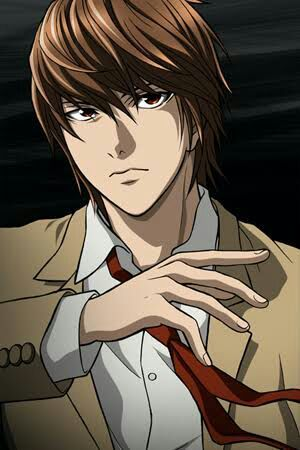

Sinopse:
Light Yagami é um estudante da cidade de Tóquio,
no Japão. Um dia, sua vida sofre uma mudança radical, quando
ele está entediado, encontra um estranho caderno sobrenatural
chamado "Death Note", caído no chão. Dentro do caderno havia
instruções sobre sua utilização, onde dizia que se escrevesse o
nome de uma pessoa e visualizasse mentalmente o rosto desta, ela
morreria de um ataque cardíaco em 40 segundos (se acaso a morte
não for especificada). No início, Light desconfiava da autenticidade
do caderno, mas depois de testá-lo em duas ocasiões, ele percebe
que seu poder era verdadeiro. Depois de cinco dias, ele é visitado
pelo verdadeiro proprietário do Death Note, um shinigami chamado Ryuk,
que conta que ele tinha deixado cair o caderno na Terra porque estava
entediado, e Light, então, lhe diz que o seu objetivo era matar
todos os criminosos, a fim de purificar o mundo do mal e
tornar-se o "deus do novo mundo".
Editor: Viz
Data de publicação: 1 de janeiro de 2003 – 15 de maio de 2006
Adaptações: Death Note (2017), Death Note (2006)
Criadores: Tsugumi Ohba, Takeshi Obata
Gêneros: Mistério, Suspense psicológico, Ficção supernatural
| Temporada | Episódios |
| Temporada 1 |
